Navegar pelo manual
CENTRAL DE AJUDA · CANAIS
Seu WhatsApp oficial,
conectado à Lumi.
Manual do cliente: prepare sua empresa na Meta, conecte o número e confira o atendimento do início ao fim.
Começar pela preparaçãoA configuração manual disponível na Lumi: dois identificadores da Meta, um token de acesso e um webhook. As etapas técnicas devem ser acompanhadas pelo suporte. Você não precisa escrever código. Se a Lumi fornecer um fluxo assistido diferente, siga a orientação específica para sua conta.
ANTES DE COMEÇAR
Separe o que você vai precisar
Faça o processo pelo computador e mantenha o telefone do número escolhido por perto. Os prazos de análise da Meta variam; não programe a mudança do atendimento contando com aprovação imediata.
As marcações servem apenas à leitura nesta página; não enviam dados nem alteram sua conta.
Quem cuida de cada parte
| Cliente / empresa | Suporte Lumi | Meta |
|---|---|---|
| Dados e documentos verdadeiros, posse do número, acessos, códigos, pagamento e autorização dos contatos. | Acompanhamento do caminho de conexão, validação dos campos, token, webhook e testes da Lumi. | Disponibilidade dos recursos, análises da empresa e dos templates, políticas, limites e tarifas. |
Combine com a Lumi quais ações estão incluídas no seu atendimento de implantação. A empresa mantém o controle dos seus ativos e autoriza os acessos necessários.
USO RESPONSÁVEL
Obrigações durante a operação
- Permissão para contato: obtenha autorização do destinatário e respeite pedidos de interrupção.
- Identificação: mantenha perfil e meios de contato da empresa corretos.
- Privacidade: publique sua política, proteja dados e cumpra a legislação aplicável.
- Atendimento: ofereça uma forma clara de chegar a uma pessoa quando houver automação.
- Conteúdo permitido: respeite as restrições de atividade e conteúdo da Meta.
Na API, mensagens livres são permitidas dentro das 24 horas contadas da última mensagem do usuário. Fora dessa janela, use template aprovado. Cada nova mensagem do usuário reinicia a janela.
Fonte: Política de Mensagens do WhatsApp Business, consultada em 28/09/2026.
Organize a implantação com o responsável por privacidade da clínica. Use dados fictícios nos testes, limite acessos da equipe e evite expor informações clínicas em lembretes, prints ou pedidos de suporte.
Custos e limites
A Meta informa cobrança por mensagem entregue, com valores por categoria e mercado. Existem regras de gratuidade e condições específicas, como mensagens de serviço e utilidade na janela de atendimento. Consulte as condições vigentes antes de planejar campanhas.
O valor do plano Lumi, eventuais serviços contratados e as tarifas da Meta devem ser conferidos no seu contrato. Não trate a assinatura Lumi como confirmação de que todos os custos da API estão incluídos.
Cliente + suporte Lumi
Escolha o número e o caminho de ativação
Antes de alterar qualquer conta
- Informe ao suporte se o número é novo, está no WhatsApp pessoal, no aplicativo WhatsApp Business ou em outra plataforma de atendimento.
- Para um número novo, confirme que sua empresa controla a linha e consegue receber SMS ou chamada. Tenha o aparelho disponível durante o cadastro.
- Para um número em uso, combine o procedimento de migração e o momento da mudança. Confirme o que será preservado, o que continuará no celular e o que aparecerá na Lumi.
- Se quiser manter o WhatsApp Business no celular, peça a validação de elegibilidade e suporte à coexistência antes de iniciar. A tela manual mostrada neste guia não comprova que a coexistência está habilitada.
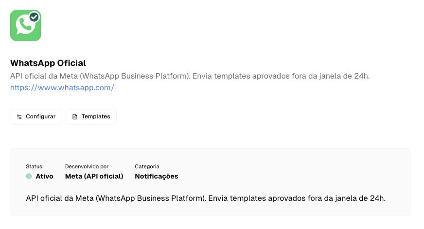
Conclua quando: Número escolhido e estratégia confirmada com o suporte.
Cliente
Confira seu acesso de administrador na Lumi
Lumi → Configurações → Organização → Canais
- Entre na Lumi e confira a organização selecionada no canto superior esquerdo. Use a organização que receberá as conversas da sua empresa.
- Abra Configurações. Na seção Organização, escolha Canais.
- Localize o cartão WhatsApp Oficial. O cartão WhatsApp QR (não oficial) corresponde a outra conexão e não deve ser usado neste procedimento.
- Se Canais não estiver disponível, peça ao administrador da sua organização o acesso adequado.
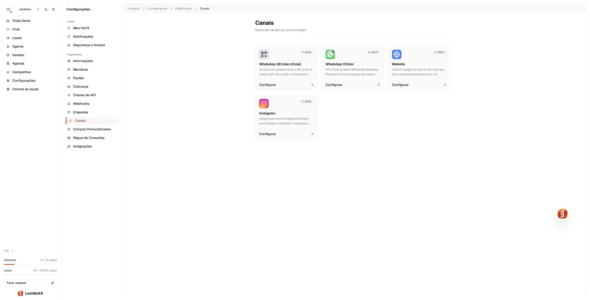
Conclua quando: A página de Canais está aberta na organização correta.
Cliente
Prepare o portfólio empresarial da Meta
Meta Business Suite → Configurações
- Acesse Meta Business Suite com seu próprio perfil do Facebook. Esse perfil deve ter controle adequado sobre os ativos da empresa.
- Selecione o portfólio empresarial que pertence à sua empresa. Se uma agência administra esse portfólio, solicite acesso ao portfólio existente antes de criar outro.
- Se a empresa ainda não tiver um portfólio, use a opção de criação oferecida pela Meta, informe nome da empresa, responsável e e-mail comercial e conclua a confirmação solicitada.
- Em Informações da empresa, confira nome legal, endereço, telefone e site. Prepare os dados oficiais da empresa, como CNPJ e razão social, para quando forem solicitados.
- Na área Pessoas, confira quem administra os ativos. A empresa deve manter acesso próprio às contas, mesmo quando o suporte ajuda na configuração.
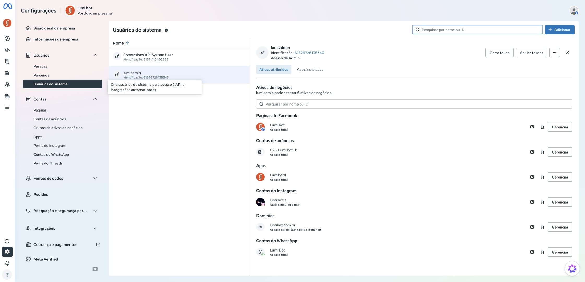
Conclua quando: Portfólio correto identificado e acesso administrativo disponível.
Cliente
Proteja o acesso e confira a verificação empresarial
Meta Business Suite → Configurações → Central de Segurança
- Abra a Central de Segurança e confira a exigência de autenticação de dois fatores. Ative a proteção do seu perfil quando a Meta solicitar; mantenha seus meios de recuperação atualizados.
- Localize Verificação da empresa. Se houver uma solicitação ou a opção Iniciar verificação aplicável ao seu caso, siga esse fluxo.
- Informe os dados exatamente como aparecem nos documentos da empresa. Envie somente os documentos aceitos na tela e confirme a relação com a empresa pelo método oferecido.
- Acompanhe a análise no painel da Meta. Se houver divergência, corrija o dado ou documento indicado. Não há prazo de aprovação garantido pela Lumi.
- Se a opção de verificação não aparecer, envie ao suporte a descrição do que está sendo exigido. Não crie novos portfólios para contornar uma restrição.
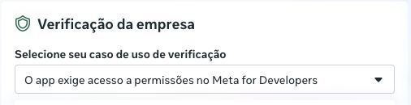
Conclua quando: Proteção de acesso configurada e situação da verificação conhecida.
Cliente com acompanhamento do suporte
Prepare o aplicativo e a conta do WhatsApp Business
Meta for Developers → aplicativo → WhatsApp
- Confirme com a Lumi qual aplicativo da Meta será utilizado. Se o suporte já provisionou a integração, use os ativos indicados por ele e não crie um aplicativo duplicado.
- No caminho de configuração manual com aplicativo próprio, acesse Meus apps. Abra o app existente ou inicie Criar aplicativo, se esse for o procedimento definido com o suporte.
- No assistente da Meta, escolha o caso de uso de WhatsApp/contato com clientes que estiver disponível e associe o portfólio correto. Os rótulos mudam entre versões do painel.
- Conclua as informações exigidas pela Meta. No aplicativo, adicione/configure o produto WhatsApp, quando necessário, e abra Configuração da API.
- Selecione ou crie a conta WhatsApp Business da empresa conforme o fluxo oferecido. Essa conta, também chamada WABA, agrupa os números e templates.
- Peça ao suporte que confira a disponibilidade do app e das permissões para uso real. O botão Ao vivo, isoladamente, não comprova que todo o processo está pronto.
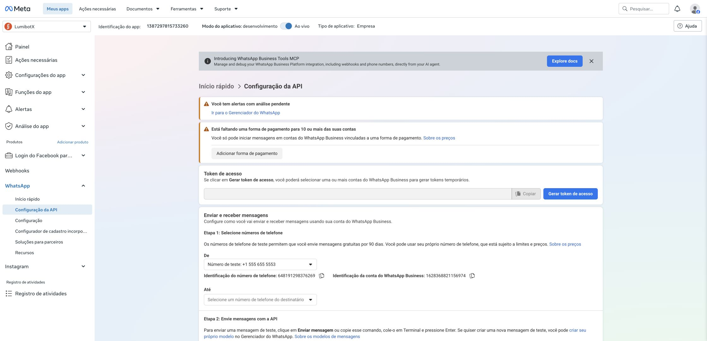
Conclua quando: Aplicativo, portfólio e conta WhatsApp Business corretos definidos.
Cliente
Cadastre o perfil comercial do número
Meta → WhatsApp → Configuração da API → Adicionar telefone
- Na Configuração da API, localize Adicionar telefone. Abra o assistente de cadastro.
- Preencha Nome de exibição do WhatsApp Business com o nome comercial que identifica sua empresa. Mantenha coerência com seu site e materiais públicos.
- Confira o fuso horário. Para empresas que operam no horário de Brasília, use America/Sao Paulo.
- Escolha a categoria que melhor descreve a atividade e preencha a descrição da empresa, se desejar.
- Confira as informações e avance. Se a Meta solicitar informações adicionais sobre a conta WhatsApp Business, preencha os dados da mesma empresa.
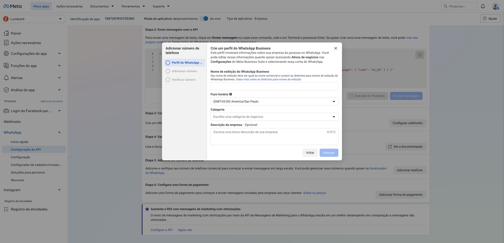
Conclua quando: Perfil comercial preenchido e etapa de número disponível.
Cliente + suporte Lumi
Confirme a posse do número e o registro na API
Assistente da Meta → Adicionar número → Verificar número
- Na etapa Adicionar número, selecione o país e informe DDD e número. Confira o formato internacional apresentado antes de continuar.
- Escolha SMS ou chamada de voz, conforme as opções disponíveis. A linha deve estar acessível e apta a receber o código.
- Digite o código diretamente na tela da Meta. Não envie códigos de confirmação ao suporte e não os inclua em prints.
- Se houver espera para reenviar, respeite o tempo indicado. Confira bloqueios da operadora, desvio de chamadas ou atendimento eletrônico quando usar a ligação.
- Ao terminar, peça ao suporte para confirmar também o registro do número na Cloud API e a configuração do PIN de verificação em duas etapas, quando aplicável. Confirmar o código e registrar o número para envio são verificações distintas.
- No caso de migração, siga o procedimento combinado na etapa 1 antes de realizar alterações na conta antiga.
Conclua quando: Número confirmado e registro operacional validado pelo suporte.
Responsável financeiro da empresa
Configure a cobrança da API oficial
Meta → WhatsApp → Configuração da API / Gerenciador do WhatsApp
- Abra a conta WhatsApp Business correta e procure Adicionar forma de pagamento ou as configurações de pagamento dessa conta.
- Confira qual empresa, conta e moeda estão selecionadas. Um cartão cadastrado para anúncios não comprova que a conta WhatsApp esteja com pagamento configurado.
- O responsável financeiro deve inserir e confirmar os dados diretamente na Meta. Não envie foto de cartão nem dados de pagamento em conversa de suporte.
- Confira o status do meio de pagamento e eventuais pendências antes dos testes de mensagens iniciadas pela empresa.
- Confirme com a Lumi quem realiza a cobrança da API no seu contrato. As condições do plano Lumi e as tarifas da Meta devem ser conferidas separadamente.
Conclua quando: Responsável pela cobrança definido e pagamento apto para os envios aplicáveis.
Cliente com suporte
Localize os dois IDs da integração
Meta → WhatsApp → Configuração da API
- No campo De, selecione o número de produção da sua empresa. Não deixe selecionado o número de teste da Meta.
- Localize Identificação do número de telefone. Esse é o valor a inserir em
phoneNumberIdna Lumi. - Localize Identificação da conta do WhatsApp Business. Esse é o valor a inserir em
businessAccountId. - Use o botão de copiar de cada campo e mantenha os dois valores associados à mesma conta e ao mesmo número.
- Não substitua esses IDs pelo número com DDD, pelo ID do aplicativo, pelo CNPJ ou pelo ID do portfólio empresarial.
Conclua quando: Os dois identificadores correspondem ao número de produção escolhido.
Administrador da Meta + suporte Lumi
Prepare o token de acesso para uso contínuo
Meta Business Suite → Configurações → Usuários → Usuários do sistema
- Peça ao suporte que confirme o tipo de token adequado ao aplicativo escolhido. O token temporário oferecido em Configuração da API serve a testes e não deve sustentar a operação diária.
- Se o caminho aprovado for um usuário do sistema, abra Usuários do sistema no portfólio do aplicativo. Selecione o usuário destinado à integração ou crie um específico com orientação do suporte.
- Atribua a esse usuário somente os ativos e as permissões necessários: o aplicativo correto e a conta WhatsApp Business correta. O usuário precisa ter acesso suficiente a ambos.
- No fluxo Gerar token, selecione o aplicativo e confira a validade disponível. Para mensagens e gerenciamento da conta/templates, o suporte deve validar
whatsapp_business_messagingewhatsapp_business_management, além de qualquer requisito específico do fluxo. - Gere o token somente após conferir escopo e ativos. Cole o valor completo no campo
accessTokenda Lumi, sem espaços extras. Guarde-o no meio seguro adotado pela empresa. - Se as permissões não aparecerem ou o token não acessar a WABA, não amplie permissões aleatoriamente: peça a revisão da vinculação do aplicativo e dos ativos.
Conclua quando: Token válido e com acesso aos ativos certos, pronto para a integração.
Administrador da Lumi
Preencha e ative o WhatsApp Oficial na Lumi
Lumi → Configurações → Organização → Canais → WhatsApp Oficial → Configurar
- Retorne à Lumi e confira novamente a organização selecionada.
- Abra WhatsApp Oficial e clique em Configurar.
- Preencha
phoneNumberId,businessAccountIdeaccessTokencom os valores das etapas anteriores. Para gerenciar templates, mantenha o ID da conta WhatsApp Business preenchido corretamente. - Mantenha a integração habilitada no controle Ativo e clique em Salvar alterações.
- Confira se a Lumi informa sucesso e se o canal aparece ativo. Em uma conexão existente, confirme com o suporte antes de substituir credenciais; um campo vazio na edição não é prova de que o token foi removido.
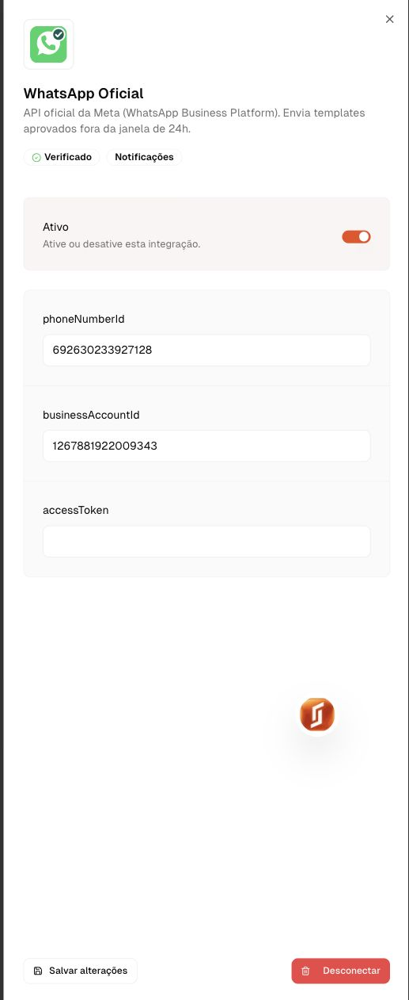
Conclua quando: Configuração salva na organização correta e canal habilitado.
Cliente com suporte
Copie as informações do webhook da Lumi
Lumi → página WhatsApp Oficial → Configuração do Webhook
- Feche o painel de configuração e localize Configuração do Webhook na página do canal.
- Copie a URL do Webhook pelos controles da sua própria organização.
- Copie o Token de verificação pelo botão da própria tela. Não confunda esse valor com o token de acesso da Meta.
- Mantenha a página aberta para comparar com os campos da Meta na etapa seguinte.
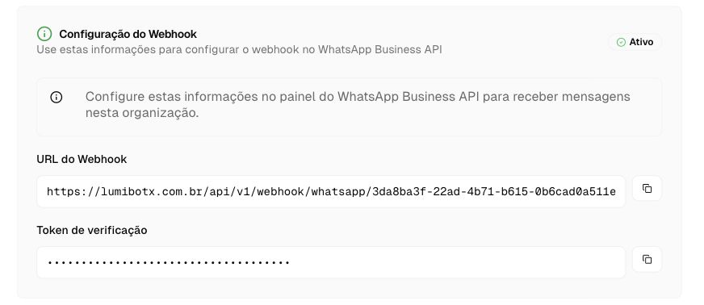
Conclua quando: URL da organização e token de verificação disponíveis para configurar o recebimento.
Administrador da Meta + suporte Lumi
Configure o webhook na Meta
Aplicativo Meta → WhatsApp → Configuração → Webhook
- Abra o mesmo aplicativo usado para o número conectado à Lumi. Entre em WhatsApp → Configuração.
- Em URL de callback, cole a URL copiada da Lumi.
- Em Verificar token, cole o Token de verificação da Lumi. Ele não é o
accessToken. - Clique em Verificar e salvar. Aguarde o resultado e resolva qualquer erro antes de avançar.
- Se o aplicativo atender outras contas ou números, peça ao suporte que valide o roteamento antes de substituir um callback existente. Uma troca pode afetar outras conexões.
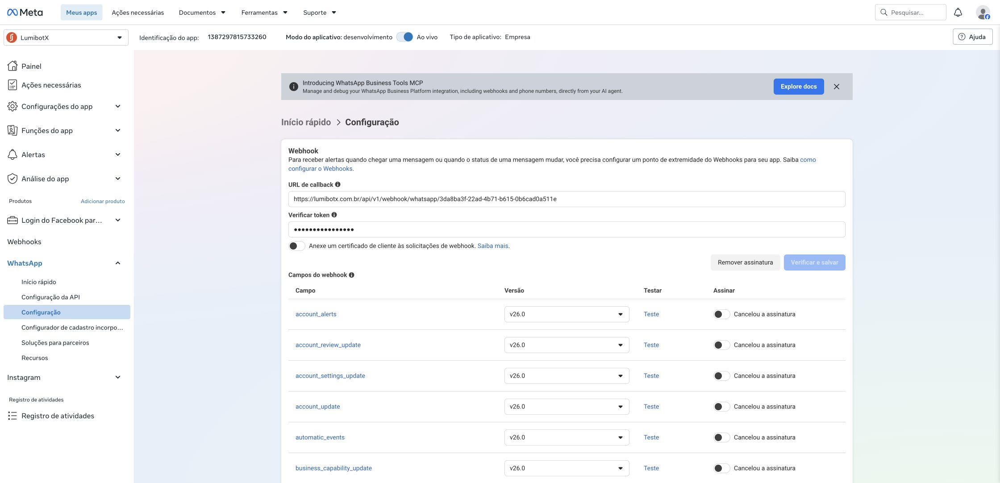
Conclua quando: A Meta aceitou a verificação do callback.
Suporte Lumi com administrador
Configure mensagens, origem dos leads e eventos avançados
Meta → WhatsApp → Configuração → Campos do webhook
- Confirme com o suporte os recursos previstos para sua empresa: atendimento, identificação da origem dos leads, templates, alertas da conta e, quando disponível, chamadas.
- Na lista Campos do webhook, localize
messagese confira o estado Assinado. Esse campo recebe mensagens e atualizações de entrega. A origem de anúncios pode vir dentro da própria mensagem. - Use o mapa abaixo para planejar as demais assinaturas. O suporte deve confirmar que a versão da Lumi instalada processa cada evento antes da ativação.
- Peça ao suporte para conferir a inscrição do aplicativo na conta WhatsApp Business correta. Validar o callback e assinar campos não substitui a vinculação do aplicativo à WABA.
- Para cada recurso liberado, confira o campo, a versão da API validada pelo suporte e o estado Assinado. Não copie versões antigas apenas porque aparecem no print.
- Execute os testes do recurso e confira o resultado na Lumi. O botão Testar da Meta comprova somente parte do percurso; finalize também com um cenário real autorizado.
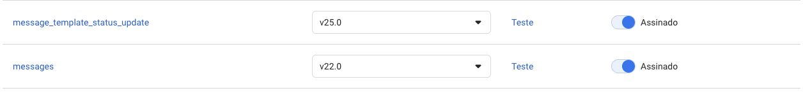
Conclua quando: Mensagens funcionando e cada recurso adicional documentado como validado ou pendente.
14.1 · Mapa de eventos por objetivo
Este mapa orienta a implantação com o suporte. Os nomes técnicos ajudam a localizar as linhas no painel; não representam uma promessa de recursos já disponíveis no seu plano.
| Objetivo | Campo no painel Meta | Condição de uso |
|---|---|---|
| Atendimento e entrega | messages | Base da integração: mensagens recebidas e status de envio, entrega, leitura ou falha, quando fornecidos pela Meta. |
| Origem do lead | messages → referral | Exige extração e gravação dos dados de origem. Não há uma assinatura adicional chamada “origem do lead”. |
| Aprovação dos templates | message_template_status_update | Receber mudanças de status e atualizar a situação apresentada na Lumi. A decisão pertence à Meta. |
| Qualidade e alterações dos templates | message_template_quality_updatemessage_template_components_updatetemplate_category_update | Prever atualização de qualidade, conteúdo e categoria. A categoria pode impactar o uso e a cobrança. Validar cada campo na versão adotada. |
| Situação do número | phone_number_quality_updatephone_number_name_update | Prever alertas sobre qualidade e situação do nome de exibição, com orientação ao administrador. |
| Situação da conta | account_updateaccount_review_updateaccount_alertsbusiness_capability_updatesecurity | Avaliar notificações administrativas aplicáveis à WABA. Cada uma precisa de tratamento e de um responsável pelo alerta. |
| Chamadas pelo WhatsApp | calls | Expansão condicionada à Calling API, elegibilidade e integração de voz. Assinar este campo sozinho não cria um botão de ligar funcional. |
| Coexistência com o aplicativo Business | historysmb_app_state_syncsmb_message_echoes | Somente no fluxo de coexistência habilitado e suportado. Não significa importação automática do histórico em qualquer integração. |
Os nomes de campos foram observados no painel da Meta. Disponibilidade, formato e condições variam por versão e conta. Outros campos exibidos, como flows, eventos de grupos ou pagamentos, precisam de análise específica do recurso antes de entrar na implantação.
14.2 · Identificar de onde veio o lead
- Informe ao suporte quais anúncios de clique para WhatsApp levam ao número conectado.
- Na implementação da origem, a Lumi deve preservar os dados
referralquando a Meta os enviar: identificador e tipo da origem, URL e informações do anúncio disponíveis. Octwa_clid, quando presente, identifica o clique para atribuição. - Valide a gravação no contato/conversa e na mensagem correspondente, mantendo a origem conhecida quando mensagens posteriores vierem sem esses dados. Ausência de
referraldeve aparecer como origem não identificada, sem presumir que o contato é orgânico. - Faça um teste autorizado a partir de um anúncio real e compare o identificador recebido com a origem exibida na Lumi. Uma mensagem digitada diretamente para o número não substitui esse teste.
- Se desejar nomes de campanha/conjunto ou relatórios de resultado dos anúncios, combine a integração adicional com a conta de anúncios. Enviar conversões à Meta também é um fluxo separado, com configuração e validação próprias.
Referência de implementação: Zendesk — dados de indicação do WhatsApp. A estrutura de armazenamento desse fornecedor é ilustrativa; a Lumi deve tratar o payload direto recebido da Meta.
14.3 · Criar, enviar para análise e acompanhar templates
O fluxo completo é: criar na Lumi → enviar à Meta → aguardar análise → atualizar o status na Lumi → usar após aprovação. O webhook de status informa a decisão; ele não envia o template para análise e não concede aprovação.
- Crie o modelo conforme a etapa 15, com a categoria, o idioma e os exemplos exigidos.
- Confirme que a Meta recebeu o cadastro. Guarde o nome/identificador e o idioma para acompanhar o mesmo modelo.
- Use Atualizar na área de Templates para consultar a situação. A atualização automática por eventos só deve ser considerada ativa depois de validada pelo suporte.
- Quando houver rejeição, confira a justificativa na Meta, ajuste o conteúdo e siga o fluxo de nova análise. Em caso de pausa, desativação ou perda de qualidade, revise também os envios programados que usam o modelo.
- Valide o sincronismo com um template de teste: a situação mostrada na Lumi deve corresponder à Meta.
14.4 · Preparar chamadas de voz
- Defina o uso: receber chamadas de clientes, realizar chamadas pela equipe ou ambos.
- Peça ao suporte para validar os requisitos atuais da Calling API para a conta e o país do número, incluindo verificações, limites e cobrança.
- A equipe técnica deve configurar o recurso no número e integrar sinalização, transporte de áudio e controles de atendimento na Lumi, além dos eventos
calls. - Para chamadas iniciadas pela empresa, implemente a solicitação e a verificação da permissão do usuário antes de ligar. Permissão para receber mensagens não deve ser tratada como autorização automática para chamadas.
- Defina quem atende, horários, comportamento quando não houver atendente e o registro do resultado da ligação.
- Antes da liberação, teste recebimento, chamada de saída autorizada, recusa, encerramento e falha de conexão, incluindo áudio nos dois sentidos.
Referência de implementação de voz: Twilio — WhatsApp Business Calling. Essa fonte demonstra chamadas e consentimento; sua configuração é específica do fornecedor e não substitui a validação da integração direta da Lumi com a Meta.
14.5 · Conferência de liberação
Cliente + suporte Lumi
Crie templates e acompanhe a aprovação da Meta
Lumi → WhatsApp Oficial → Templates → Criar Template
- Na Lumi, clique em Templates. Use Atualizar para sincronizar a lista quando necessário.
- Clique em Criar Template. Defina um nome descritivo com letras minúsculas, números e underscores, por exemplo
lembrete_agendamento. - Escolha a categoria e o idioma. Utility corresponde a comunicações transacionais; Marketing, a conteúdo promocional; Authentication, a autenticação. A classificação final segue a análise da Meta.
- Escreva o corpo da mensagem. Inclua cabeçalho, rodapé e botões somente se forem necessários. Confira as variáveis e os exemplos exigidos pela Meta.
- Exemplo de texto para revisão: “Olá, {{1}}. Seu agendamento com {{2}} está previsto para {{3}}, às {{4}}. Precisa de ajuda para ajustar o horário?” Não inclua informações clínicas sensíveis nesse exemplo.
- Salve e acompanhe o status. Utilize o template somente depois de aprovado. Se a Meta pedir exemplos ou ajustes que não estejam disponíveis na Lumi, conclua pelo Gerenciador do WhatsApp com o suporte.
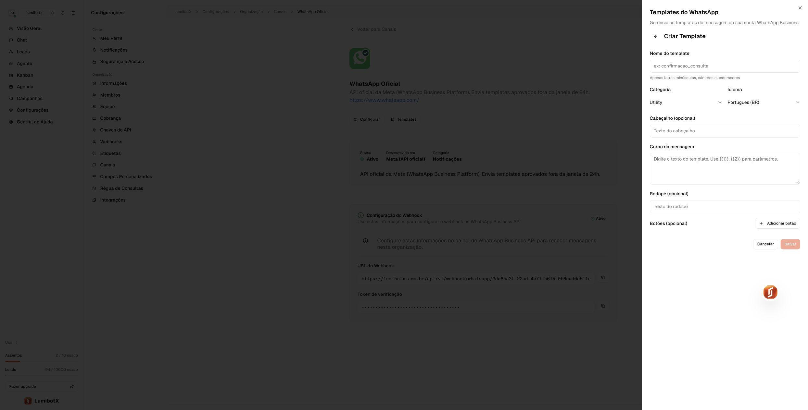
Conclua quando: Template no idioma correto, aprovado e disponível para seleção na Lumi.
Cliente + suporte Lumi
Teste recebimento, resposta e atendimento
Lumi → Chat; telefone de teste autorizado
- Use um telefone de teste da equipe, com autorização, e envie uma mensagem simples para o número conectado. Exemplo: “Olá, gostaria de saber o horário de atendimento”.
- Abra Chat na Lumi. Confira se a mensagem entrou na organização correta e se o contato corresponde ao telefone de teste.
- Responda pela Lumi e confirme o recebimento no aparelho. Verifique também os indicadores de entrega disponíveis.
- Se o agente de IA for atender, confira suas instruções, horários, informações da empresa e transferência para uma pessoa antes de ativar a rotina. Teste uma pergunta simples e o pedido de atendimento humano.
- Teste um template aprovado com um contato autorizado e confirme sua entrega. Para validar especificamente o cenário fora da janela de atendimento, use uma conversa de teste que já esteja fora dela; enviar um template dentro da janela não prova esse cenário.
- Registre a data, quem acompanhou o teste e quais verificações passaram. Inicie o atendimento após os testes previstos, com responsável definido para acompanhar falhas.
Conclua quando: Recebimento e resposta comprovados; IA e templates validados conforme o uso contratado.
SE ALGO NÃO FUNCIONAR
Encontre o próximo passo
Não encontro Canais ou Configurar
Confira a organização escolhida e seu papel de administrador na Lumi. Peça ao administrador a revisão do acesso.
A empresa ou a conta WhatsApp não aparece
Confira o perfil do Facebook, o portfólio e os acessos aos ativos. Evite criar contas duplicadas.
O número já está registrado
É um cenário de migração ou coexistência. Interrompa a tentativa e alinhe o caminho com o suporte antes de alterar a conta antiga.
O código não chega
Confira país, DDD e número; sinal da linha; bloqueios de SMS/chamada; URA e desvio. Respeite o prazo de reenvio da tela.
Nome de exibição ou verificação em análise
Acompanhe o motivo e o status na Meta. Corrija divergências com os documentos e a marca pública. O suporte não pode garantir a aprovação.
Token inválido ou integração que parou depois
Peça a conferência de validade, revogação, aplicativo e acesso do usuário do sistema aos ativos. Um token de teste pode ter expirado.
Webhook não verifica
Compare URL e token de verificação com os da organização na Lumi. Peça ao suporte que confira disponibilidade do endpoint.
Consigo enviar, mas não recebo na Lumi
Confira o callback, a assinatura messages, a inscrição do app na WABA e a organização da URL. Teste com o número de produção correto.
Recebo na Lumi, mas a resposta não chega
Confira token, registro do número, permissões, cobrança, janela de atendimento e o erro retornado pela Meta. Entrega depende também do destinatário.
Templates não aparecem
Confira businessAccountId, acesso à conta e sincronização por Atualizar. Verifique aprovação e idioma no Gerenciador do WhatsApp.
Template rejeitado, pausado ou não entregue
Leia o motivo na Meta. Revise categoria, conteúdo e variáveis. Confira status, limites e condições do destinatário antes de reenviar.
Mensagens chegam, mas a IA não responde
A conexão pode estar funcionando. Peça revisão do agente, de sua ativação, configuração e regras de atendimento na Lumi.
Conta restrita ou cobrança pendente
Resolva a pendência no painel da Meta e acompanhe o procedimento de revisão oferecido. Criar outra conta não resolve a causa da restrição.
CONFERÊNCIA FINAL
Pronto para começar o atendimento?
Dúvidas rápidas
Preciso comprar outro chip?
Nem sempre. Um número existente pode exigir migração ou um fluxo elegível de coexistência. Confirme o cenário com a Lumi antes de mexer no WhatsApp atual. Um número novo e sob controle da empresa pode simplificar a implantação.
Vou continuar usando o aplicativo no celular?
Isso depende do fluxo de ativação. A coexistência exige elegibilidade e suporte específico. A configuração manual mostrada aqui não oferece, por si só, essa garantia.
O histórico antigo vai aparecer na Lumi?
Não presuma importação automática. Confirme com o suporte o que é suportado para o seu cenário e planeje a preservação dos registros necessários antes da mudança.
A API oficial impede bloqueios?
Não. A Meta continua avaliando qualidade, conteúdo, comportamento e conformidade. A conexão oficial não garante entrega de todas as mensagens nem ausência de restrições.
Os três códigos e tokens são a mesma coisa?
Não. O código por SMS/chamada confirma a posse da linha. O token de acesso autoriza a API da Meta. O token de verificação valida o callback do webhook. O PIN de verificação em duas etapas do número é outra proteção, distinta desses valores.
Devo criar um aplicativo da Meta sozinho?
Primeiro confirme o caminho da sua implantação. Algumas configurações são gerenciadas pelo suporte; o caminho manual com aplicativo próprio exige acesso aos ativos e preparação técnica. Não crie apps ou WABAs duplicados sem necessidade.
PRECISA DE AJUDA?
Leve o contexto certo para o suporte.
Informe a etapa, o horário aproximado, o texto do erro e se a falha ocorre no envio, no recebimento ou nos dois. Envie um print recortado da mensagem de erro, sem conversas, telefones pessoais, documentos, códigos ou tokens.
O suporte pode solicitar os identificadores do app, WABA ou telefone por um canal apropriado. Não envie senha, token de acesso, código SMS ou cartão.
Abrir Central de Ajuda Lumi ↗Referências e atualização
As capturas foram feitas nos painéis reais da Lumi e da Meta em 28/09/2026. Nomes e disposição dos menus podem mudar. Imagens de referência são identificadas nas legendas; nenhuma mensagem, número, token ou pagamento foi criado para produzir este guia.
- Lumi: conectando seu primeiro canal.
- Meta for Developers: painel de aplicativos — Configuração da API, cadastro do número e Webhook.
- Meta Business Suite — usuários do sistema, segurança e verificação empresarial.
- WhatsApp Business: política de mensagens.
- WhatsApp Business: preços oficiais.
- Meta: documentação de webhooks — referência técnica para o suporte.
Algumas páginas da Central de Ajuda da Meta não ficaram acessíveis na consulta. Os prints deste guia são dos próprios painéis, não reproduções inventadas dessas páginas. Os exemplos não devem ser usados como credenciais de configuração.